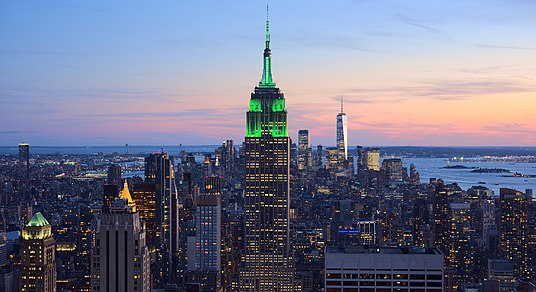

New York
New York, often called New York City or NYC, is the most populous city in the United States. With a 2020 population of 8,804,190 distributed over 300.46 square miles (778.2 km2), New York City is the most densely populated major city in the United States and more than twice as populous as Los Angeles, the nation's second-largest city. The city also has a population that is larger than that of 38 individual U.S. states. New York City is located at the southern tip of New York State. The city constitutes the geographical and demographic center of both the Northeast megalopolis and the New York metropolitan area, the largest metropolitan area in the U.S. by both population and urban area. With over 20.1 million people in its metropolitan statistical area and 23.5 million in its combined statistical area as of 2020, New York is one of the world's most populous megacities, and over 58 million people live within 250 mi (400 km) of the city.
Los Angeles

Los Angeles is the largest city in California, the second-most populous city in the United States after New York City, and one of the world's most populous megacities. With a population of roughly 3.9 million residents within the city limits as of 2020, Los Angeles is known for its Mediterranean climate, ethnic and cultural diversity, being the home of the Hollywood film industry, and its sprawling metropolitan area. The majority of the city proper lies in a basin in Southern California adjacent to the Pacific Ocean in the west and extending partly through the Santa Monica Mountains and north into the San Fernando Valley, with the city bordering the San Gabriel Valley to its east. It covers about 469 square miles 1,210 km2, and is the county seat of Los Angeles County, which is the most populous county in the United States with an estimated 9.86 million residents as of 2022.
Boston

Boston, officially the City of Boston, is the capital and largest city of the Commonwealth of Massachusetts and the cultural and financial center of the New England region of the Northeastern United States. The city boundaries encompass an area of about 48.4 sq mi (125 km2) and a population of 675,647 as of 2020. The city is the economic and cultural anchor of a substantially larger metropolitan area known as Greater Boston, a metropolitan statistical area (MSA) home to 4,941,632 million people as of 2020, ranking as the tenth-largest MSA in the country. A broader combined statistical area (CSA), generally corresponding to the commuting area and including Worcester, Massachusetts and Providence, Rhode Island, is home to approximately 8.2 million people, making it the sixth most populous in the United States.